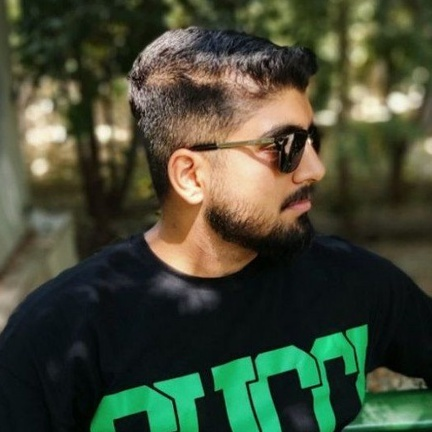

Electrical Engineering Student
iam Mohammad Hassanzadeh-Aski, known as Barsam. I am currently a student at Mazandaran University, where I am pursuing a degree in Electrical Engineering. My primary passion lies in power electronics and industrial automation. I am particularly fascinated by the potential of integrating machine learning into power systems to optimize performance and efficiency. My goal is to deepen my expertise in this field and contribute to the advancement of smart, automated systems in the industry. Feel free to reach out to me via the platforms below.